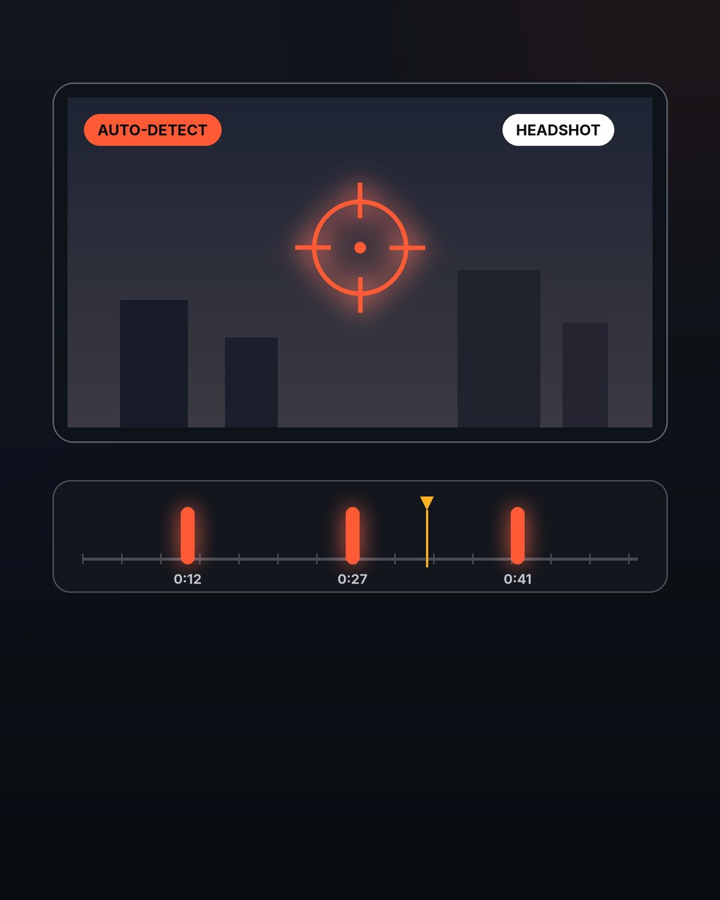
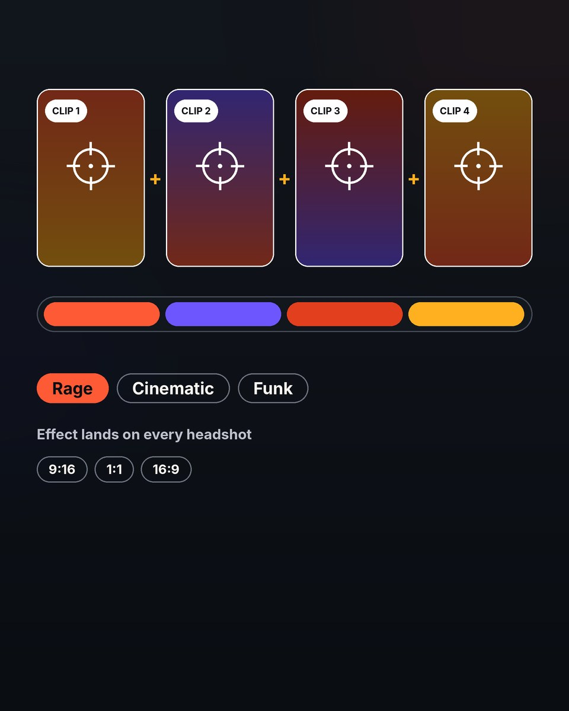
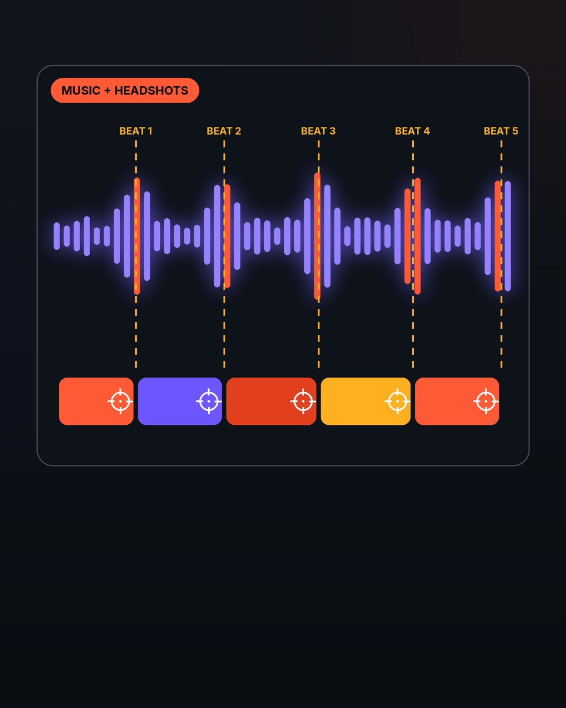

ClipForge
ClipForge
Turn Free Fire headshots into beat-synced montages.
ClipForge scans your Free Fire clip for headshots, cuts around every one, lands each hit on the beat of your music, adds effects and an optional title, and exports it vertical, square or widescreen — straight from your phone.
Made for Free Fire creators who edit montages on their phones
Built around your Free Fire clips.
ClipForge turns Free Fire headshots into sharp, share-ready edits with automatic detection, beat syncing, and flexible export ratios.



Editing a headshot montage by hand means scrubbing for every kill, cutting each one, and lining it up with the beat.
Now ClipForge finds each headshot, cuts around it and lands it on the beat — in minutes, not hours, in the time it takes to make coffee.
Built to find the moment, not just the footage.
Everything in ClipForge exists for one job: turning your headshots into a clean, beat-synced montage.
Auto Headshot Detection
Upload a clip and ClipForge scans it for headshot moments, then drops a bar on the timeline for each one. Move, add or remove bars by hand any time.
Beat Sync Editing
Add a song, or a video to take the music from, and every headshot lands exactly on a beat. Short on footage? ClipForge fills the gap with clean clips from your video.
Auto Title
Tick one box to add a random title at the top of your video, and choose how many seconds it stays on screen.
Headshot Effects
Pick an effect style and it hits on every headshot, with a colour look across the whole video. Each time you generate, you get a fresh pick from the style you chose.
Gap Control
Decide how much footage plays before each headshot: keep the whole clip, trim the long stretches, or fill every lead-up to an exact length.
Extraction Lab
Pull just the headshot moments out of a longer clip into a tight highlight, with the full hit kept every time.
From raw clip to finished montage.
Add your clip
Pick a Free Fire gameplay clip from your phone. It's shrunk right in your browser first, so the upload stays fast.
Headshots get marked
ClipForge scans the clip and puts a bar on the timeline for each headshot. Fix, add or remove bars by hand.
Choose your style
Pick an effect, a ratio and an optional title. For Beat Sync, add your music too. Then hit generate.
Save your video
Watch it, then download the MP4. Finished videos are kept for 5 hours, so save yours before they're removed.
Made for headshot montage creators.
Right now ClipForge is focused on Free Fire headshots, so the detection and the cuts are tuned for exactly that.
Free Fire creators
Turn your best kills into a montage without scrubbing through every match to find them.
Montage makers
Land every headshot on the drop of your favourite track, with no manual timeline work.
Phone-first editors
Everything runs in your browser. No desktop software and no heavy editing app to install.
Short-form channels
Export vertical, square or widescreen videos for the shape your channel or page needs.
Highlight pages
Running a clips page? Cut the headshot moments out of long clips quickly with the Extraction Lab.
What to know before you start.
Free to try. You get free credits when you sign up, and each finished video uses 2 credits. If a video fails to render, your credits are returned automatically.
Made for Free Fire. Detection reads the headshot icon on the Free Fire screen, so other games aren't supported yet. You can always place bars by hand.
Download within 5 hours. Finished videos are removed from our servers after 5 hours, so save yours to your phone as soon as it's ready.
Your next headshot montage is already in your footage.
Sign up, add a clip, and get your first beat-synced montage in minutes.